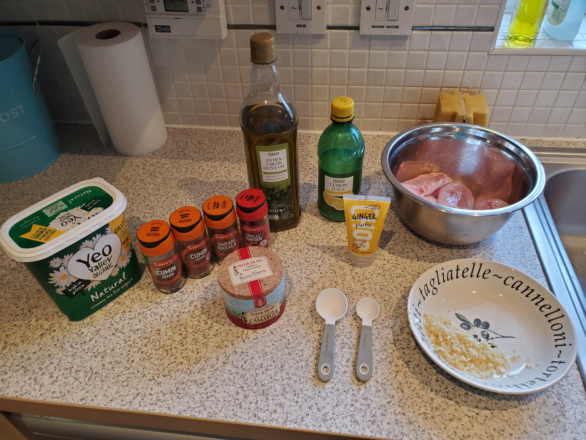
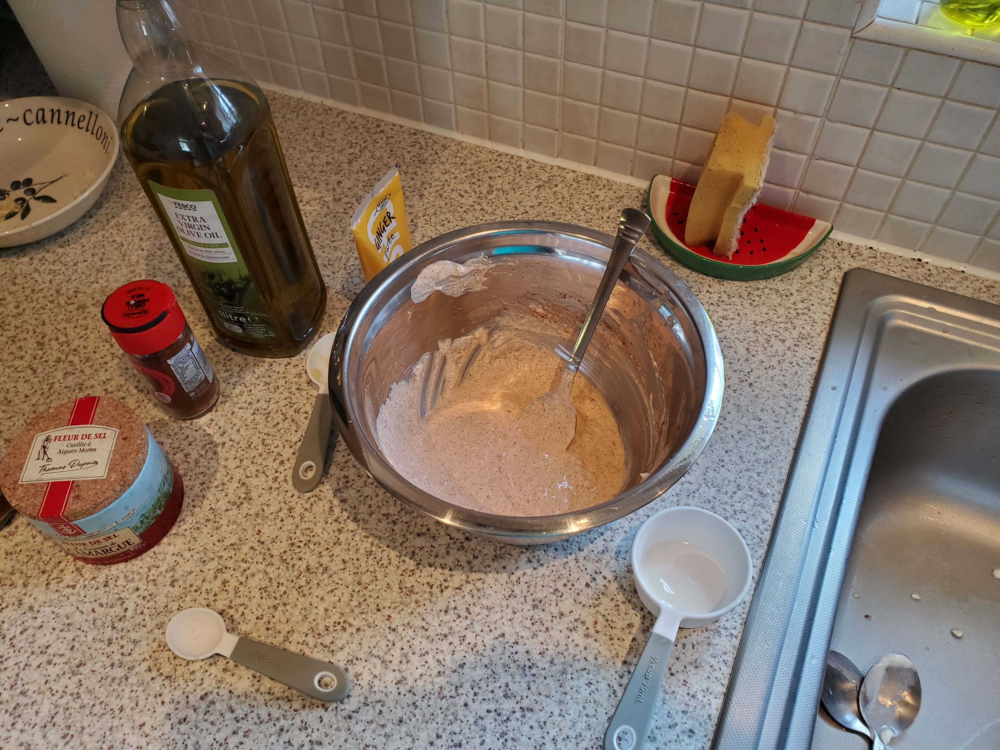
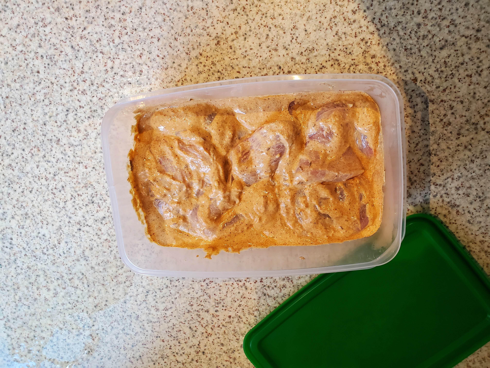

Ingredients

- Chicken (600g)
- Onion
- Garlic (6 cloves)
- Yogurt (1/3 cup) - Use lactose free, if required.
- Cream (125 ml) - Use lactose free, if required.
- Tomato Puree (2 cups)
- Ginger Paste (7 tea spoons)
- Lemon Juice (1 table spoon)
- Oil (2 table spoons)
- Red Chili Powder (7 tea spoons)
- Garam Massala (1.5 tea spoons)
- Crushed Cumin (3 tea spoons)
- Tumeric (1 tea spoon)
- Corriander (2 tea spoons)
- Herbs (2 tea spoons)
- Salt
- Naan Bread
- Pappadoms
- Mango Chutney
Step 1 - Marinade

- Slice chicken and put aside.
- Mix the following into a bowl:
Lemon Juice (1 table spoon)
Garlic (3 cloves)
Ginger Paste (3 tea spoons)
Yogurt (1/3 cup)
Red Chili Powder (1 tea spoon) - Increase to your spice liking.
Garam Massala (0.5 tea spoon)
Crushed Cumin (1 tea spoon)
Ground Cumin (1 tea spoon)
Oil (2 table spoons)
- Add sliced chicken and mix. I like to use my hands as I can thoroughly cover chicken with marinade.

- Put chicken maranade into a tub and put in fridge for at least four hours.
Step 2 - Sauce
- Yogurt (1/3 cup)
- Tomato Puree (2 cups)
- Ginger Paste (7 tea spoons)
- Lemon Juice (1 table spoon)
- Oil (2 table spoons)
- Red Chili Powder (7 tea spoons)
- Garam Massala (1.5 tea spoons)
- Crushed Cumin (3 tea spoons)
- Tumeric (1 tea spoon)
- Corriander (2 tea spoons)
- Herbs (2 tea spoons)
- Salt
- Naan Bread
- Pappadoms
- Mango Chutney